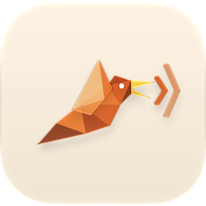

SuperChirps
Hold a key, speak, and your words appear at your cursor — in any app, without leaving your laptop.
Download for MacFree · Apple Silicon (M1+) · macOS 26+
First launch: macOS will warn — here’s the 20-second fix
Full walkthrough with every dialog in the install notes.
The only choice is how much polish you want.
On-device speech-to-text. Your words, exactly as you said them, typed at your cursor.
Leaves your Mac? No.
On-device speech-to-text, plus a local AI pass that fixes punctuation, capitalisation, and fillers — without changing what you meant.
Leaves your Mac? No.
Every mode runs a neural speech model locally — “Raw” isn’t “no AI”, it’s no rewrite and no network. The only boundary that matters is whether anything leaves the laptop. Here, nothing does.
Push-to-talk or tap-to-toggle, on whichever modifier key you choose.
Casual in Slack, formal in Mail — named modes that switch on automatically based on the app you’re in.
Select text and say “make this more formal.” The local AI rewrites it — and none of it leaves your Mac.
Teach it your names, brands, and jargon once, and stop fixing them by hand.
Whisper Large V3 Turbo by default, or Apple Speech and NVIDIA Parakeet for near-instant transcription.
A glass HUD with a live waveform, plus selectable start/stop sounds. Both optional.
Your last dictation stays one click away, so a paste into the wrong window is never lost.
New versions install in place. No telemetry — the version check is the only network call, and you can turn it off.